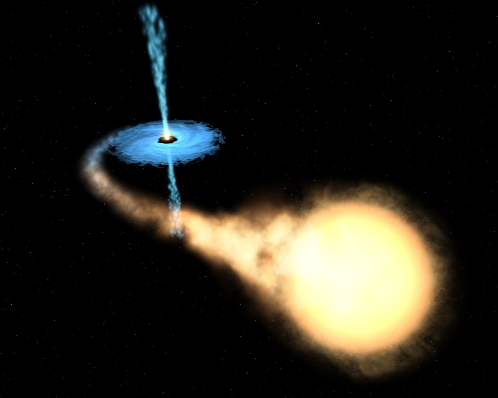

Origen
Los agujeros negros se forman en un proceso de colapso gravitatorio que fue ampliamente estudiado a mediados de siglo XX por diversos científicos, particularmente Robert Oppenheimer, Roger Penrose y Stephen Hawking, entre otros. Hawking, en su libro divulgativo Historia del tiempo: del Big Bang a los agujeros negros (1988), repasa algunos de los hechos bien establecidos sobre la formación de agujeros negros. Este proceso comienza después de la "muerte" de una gigante roja (estrella de 10 a 25 o más veces la masa del Sol), entendiéndose por "muerte" la extinción total de su energía. Tras varios miles de millones de años de vida, la fuerza gravitatoria de dicha estrella comienza a ejercer fuerza sobre sí misma originando una masa concentrada en un pequeño volumen, convirtiéndose en una enana blanca. En este punto, dicho proceso puede proseguir hasta el colapso de dicho astro por la autoatracción gravitatoria que termina por convertir a esta enana blanca en un agujero negro. Este proceso acaba por reunir una fuerza de atracción tan fuerte que atrapa hasta la luz en este. En palabras más simples, un agujero negro es el resultado final de la acción de la gravedad extrema llevada hasta el límite posible. La misma gravedad que mantiene a la estrella estable, la empieza a comprimir hasta el punto que los átomos comienzan a aplastarse. Los electrones en órbita se acercan cada vez más al núcleo atómico y acaban fusionándose con los protones, formando más neutrones mediante el proceso.
stephen Hawking
Stephen William Hawking (pronunciación en inglés: /stiːvən_ˈhɔːkɪŋ/ ( escuchar); Oxford, 8 de enero de 1942-Cambridge, 14 de marzo de 2018)34 fue un físico teórico, astrofísico, cosmólogo y divulgador científico británico. Sus trabajos más importantes consistieron en aportar, junto con Roger Penrose, teoremas respecto a las singularidades espaciotemporales en el marco de la relatividad general y la predicción teórica de que los agujeros negros emitirían radiación,5 lo que se conoce hoy en día como radiación de Hawking (o a veces radiación Bekenstein-Hawking). Uno de los principales características de su personalidad fue su contribución al debate científico, a veces apostando públicamente con otros científicos, el caso más conocido es su participación en la discusión sobre la conservación de la información en los agujeros negros.

Historia
El concepto de un cuerpo tan denso que ni siquiera la luz puede escapar de él fue descrito en un artículo enviado en 1783 a la Royal Society por el geólogo y clérigo inglés John Michell. Por aquel entonces la teoría de Newton de la gravitación y el concepto de velocidad de escape eran muy conocidas. Michell calculó que un cuerpo con un radio 500 veces el del Sol y la misma densidad, tendría, en su superficie, una velocidad de escape igual a la de la luz y sería invisible. En 1796, el matemático francés Pierre-Simon Laplace explicó en las dos primeras ediciones de su libro Exposition du Systeme du Monde la misma idea, aunque, al ganar terreno la idea de que la luz era una onda sin masa, en el siglo XIX fue descartada en ediciones posteriores.
